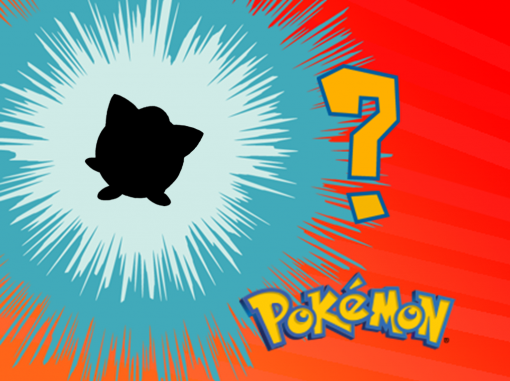
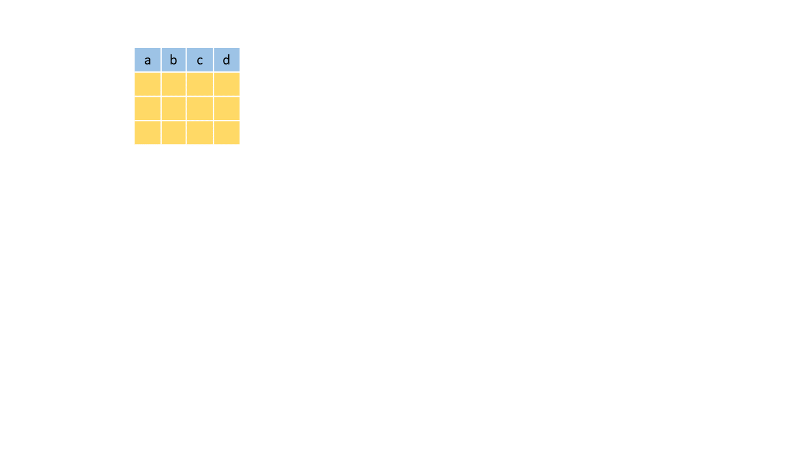
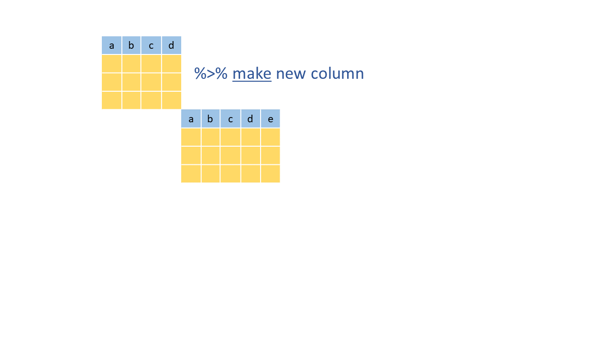
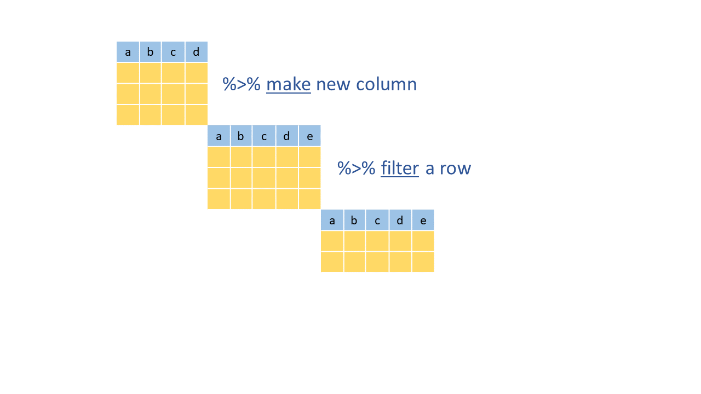
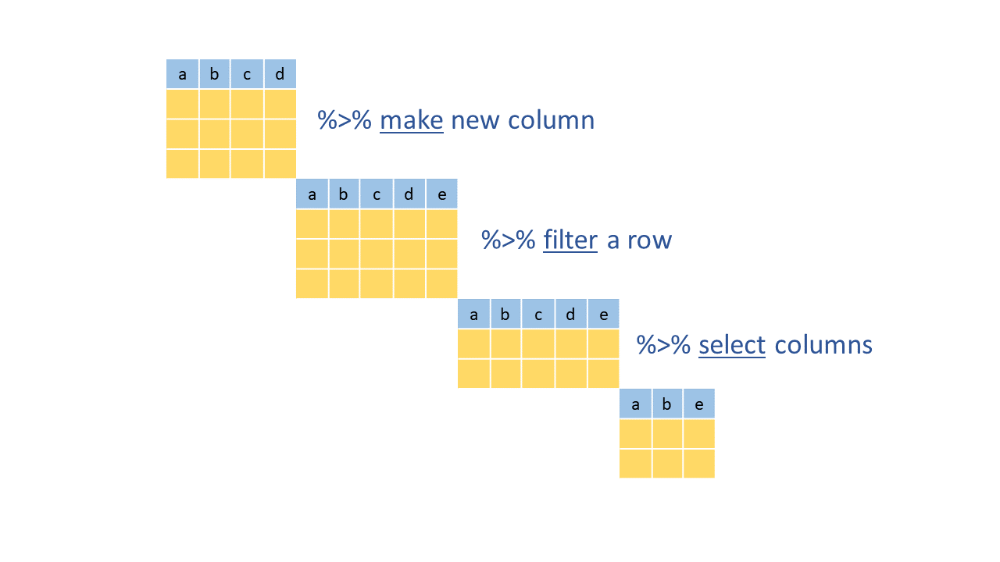
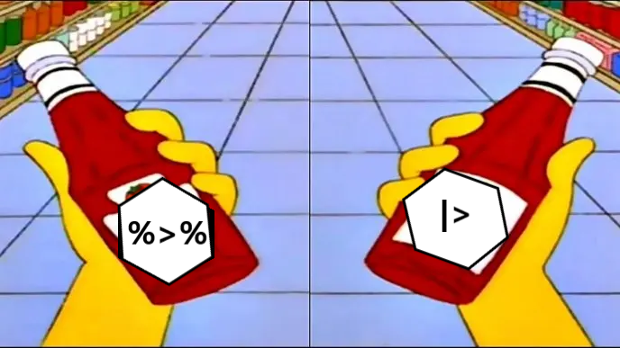

05:00
dplyr
Dplyr
Paquete que proporciona un set de herramientas para manipular set de datos en R. Alguna de las funciones que revisaremos son:

select()filter()mutate()group_by()summarise()
Base de datos
Base de datos de Pokémon obtenida de Kaggle. La base de datos contiene la siguiente información:

- pokedex number: Número de identificador
- Name: Nombre de cada Pokémon
- Type: Tipo de Pokémon
- HP: Hit Points, define qué tanto daño puede tolerar
- Attack: Ataque
- Defense: Defensa
- SP Atk: Ataque especial
- SP Def: Defensa especial
- Speed: Velocidad. Determina cuál Pokémon ataca primero en cada ronda
- Weight: Peso en kg
- Generation: A cuál generación pertenece
- is legendary: Si es legendario o no
Ejercicio:
¿Quien es ese pokemon? ❗💥
valor de HP entre 100 y 200
valor de velocidad menor a 50
es del tipo1 Normal
valor de defensa menor a 40
pertenece a la primera generación

Ejercicio:
En una galaxía muy lejana…
Abre la tabla starwars que se encuentra en el directorio de databases y genera los siguientes objetos:
Parte I:
- Una tabla que incluya solamente el nombre del personaje y todas las variables relacionadas con colores.
- Una tabla que incluya solamente los personajes femeninos del planeta Naboo.
- Una tabla con los personajes que hayan aparecido en Attack of the Clones.
Ejercicio:
En una galaxía muy lejana…
Abre la tabla starwars que se encuentra en el directorio de databases y genera los siguientes objetos:
Parte II:
Genera un solo objeto donde realices lo siguiente:
- Selecciona las columnas
name,height,mass,sex,gender. - Cambia el nombre de las columnas por “nombre”, “altura”, “masa”, “sexo”, “genero”.
- Calcula la relación masa/altura
- Filtra los individuos con una relación masa/altura > 1
El operador pipe %>%
Permite aplicar una serie de funciones secuenciales a un objeto

El operador originalmente viene del paquete magrittr, nombrado asi por René Magritte
Filtrar, seleccionar y mostrar primeras líneas en R base
head(select(filter(pokemon, attack < 100), name, attack)):::
El operador pipe %>%
Permite aplicar una serie de funciones secuenciales a un objeto
El operador originalmente viene del paquete magrittr, nombrado asi por René Magritte
Filtrar, seleccionar y mostrar primeras líneas en R base
head(select(filter(pokemon,
attack < 100),
name, attack)
):::
El operador pipe %>%
Permite aplicar una serie de funciones secuenciales a un objeto
El operador originalmente viene del paquete magrittr, nombrado asi por René Magritte
Filtrar, seleccionar y mostrar primeras líneas en R base
head(select(filter(pokemon,
attack < 100),
name, attack)
)Filtrar, seleccionar y mostrar primeras líneas en Tidyverse
pokemon %>%
select(name, attack) %>%
fitler(attack < 100) %>%
head():::
El operador pipe %>% (y luego…)

El operador pipe %>% (y luego…)

El operador pipe %>% (y luego…)

El operador pipe %>% (y luego…)

El operador pipe %>% (y luego…)
salgo_casa(
visto(
salgo_cama(
despierto(yo)
)
)
)El operador pipe %>% (y luego…)
yo <- despierto(yo)
yo <- salgo_cama(yo)
yo <- visto(yo)
yo <- salgo_casa(yo)El operador pipe %>% (y luego…)
yo %>%
despierto() %>%
salgo_cama() %>%
visto() %>%
salgo_casa()El operador pipe %>%
Desde su versión 4.1.0, R incluye un pipe nativo |>. El comportamiento de ambos pipes es en gran medida el mismo, permitiendo expresar una secuencia de operaciones a un objeto.

Ejercicio:
Palmer penguins

Abre la tabla palmer_penguis.csv que se encuentra en el directorio de databases y utilizando pipes genera los siguientes objetos:
Un objeto con los pingüinos de la especie Adelie y que incluya una columna con la proporción (ratio) entre la longitud y profundidad del pico.
Un objeto solamente los individuos hembras y que solamente contenta las columnas de especie, isla y peso corporal en Kg.
Un objeto que contenga a los individuos machos de la especie Gentoo con un peso corporal mayor a 4 Kg. Convierte la columna isla a factor.
05:00
Ejercicio:
Tiburon a la vista!
Abre la tabla attacks.csv que se encuentra en el directorio databases. Explora los datos que contiene y realiza lo siguiente:
Limpia el nombre de las columnas
Filtra los registros que se tengan a partir del siglo XIX
Con esta nueva tabla y usando las herramientas vista al momento, contesta lo siguiente:
- ¿Que país tiene el mayor número de registros de ataque?
- ¿Que actividad tiene el mayor número de registros?
- ¿Que actividad tiene el mayor número de registros con resultado fatal?
- ¿Que país tiene el mayor número de registros de tiburón blanco?
Ejercicio:
A continuación se muestra una cadena de funciones con dplyr para estimar el promedio del ratio entre la masa corporal (body_mass_g) y el tamaño de la aleta (flipper_length_mm) en las tres especies de pingüinos de Palmer. Acomoda la cadena en el orden correcto:
# a
arrange(aleta_peso_ratio_promedio)
# b
pinguinos <- read.csv("data/palmer_penguins.csv")
# c
group_by(species)
# d
summarise(aleta_peso_ratio_promedio = mean(aleta_peso_ratio, na.rm = TRUE))
# e
mutate(aleta_peso_ratio = body_mass_g/flipper_length_mm)05:00